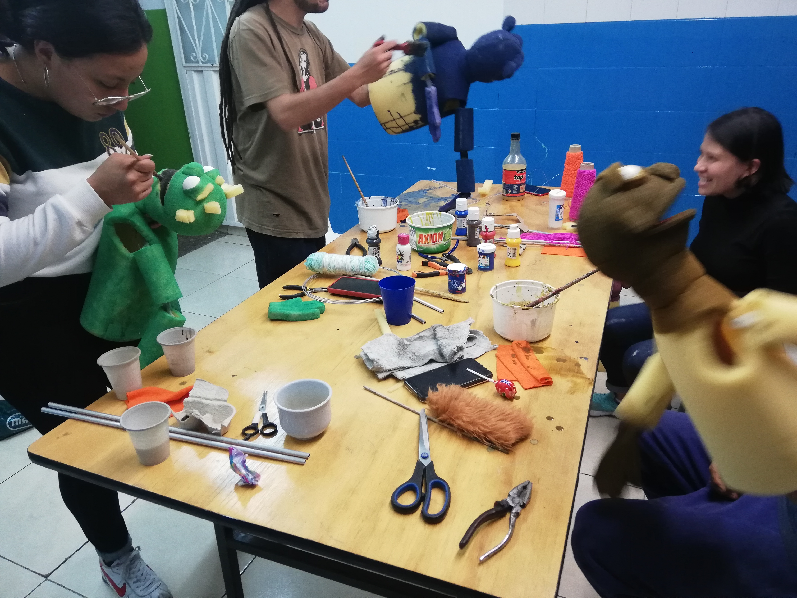

Medio ambiente
Títeres de Mesa.
Contribuir a la concientización de los integrantes de la fundación FAEV, acerca de la importancia del manejo adecuado de los residuos sólidos caseros.
Objetivos Especificos
Comprender el manejo adecuado de residuos sólidos caseros, como herramienta para el buen uso, exploración plástica, estética y escénica de los mismos con el grupo de trabajo de la fundación arte educación para la vida. Contribuir a la concientización de los integrantes de la fundación FAEV, acerca de la importancia del manejo adecuado de los residuos sólidos caseros. Identificación de buenas prácticas para la trasformación de los residuos sólidos plásticos en artículos artesanales decorativos, como mecanismo para el aprovechamiento de residuos y la preservación del medio ambiente. Identificar las posibilidades de transformación de materiales solidos recuperados.

Circulación Obra El Juicio
Títeres Bocones.
Contribuir a la concientización de los integrantes de la fundación FAEV, acerca de la importancia del manejo adecuado de los residuos sólidos caseros.
Laboratorio de exploración
Comprender el manejo adecuado de residuos sólidos caseros, como herramienta para el buen uso, exploración plástica, estética y escénica de los mismos con el grupo de trabajo de la fundación arte educación para la vida. Contribuir a la concientización de los integrantes de la fundación FAEV, acerca de la importancia del manejo adecuado de los residuos sólidos caseros. Identificación de buenas prácticas para la trasformación de los residuos sólidos plásticos en artículos artesanales decorativos, como mecanismo para el aprovechamiento de residuos y la preservación del medio ambiente. Identificar las posibilidades de transformación de materiales solidos recuperados.
Creación de titeres bocones

Teatro de Calle
el teatro como medio didáctico para el desarrollo de la comunicación empática en los niños y niñas de segunda infancia de la fundación arte educación para la vida
Taller corpo vocal
El desarrollo de la expresión y destrezas del cuerpo permiten que el individuo se comunique con el otro de formas pacificas mediadas por lenguajes empáticos. La situación pandémica a aislado a todos y convocado a la individualidad de forma no intencional, este taller busca ampliar la visión empática y conquistar las posibilidades que tiene el cuerpo desde el otro, para el otro y con el otro, entendiendo así que el cuerpo en el campo escénico es representado como una unidad a través del gesto y la voz, fuentes potenciadas por el corazón y la razón.